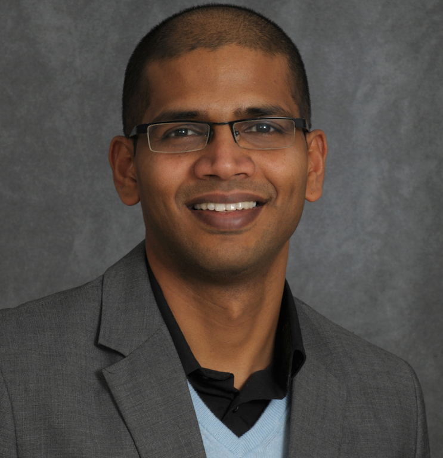
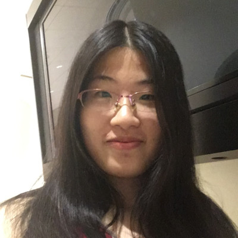
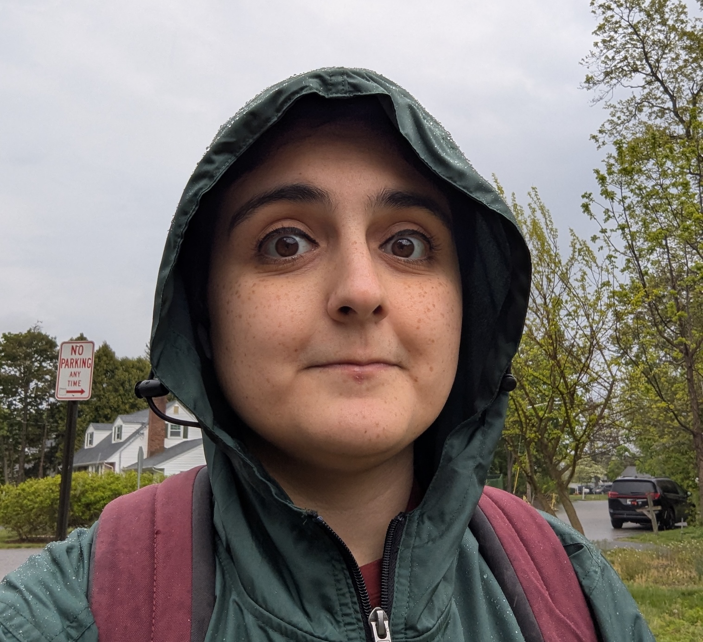
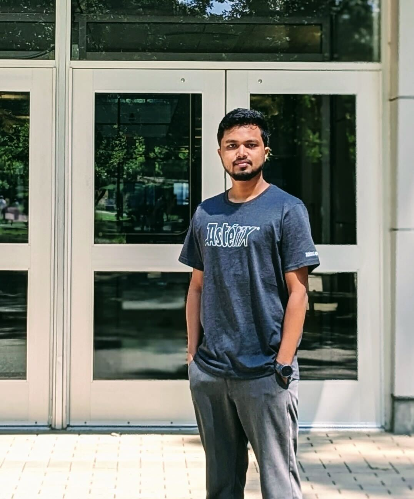
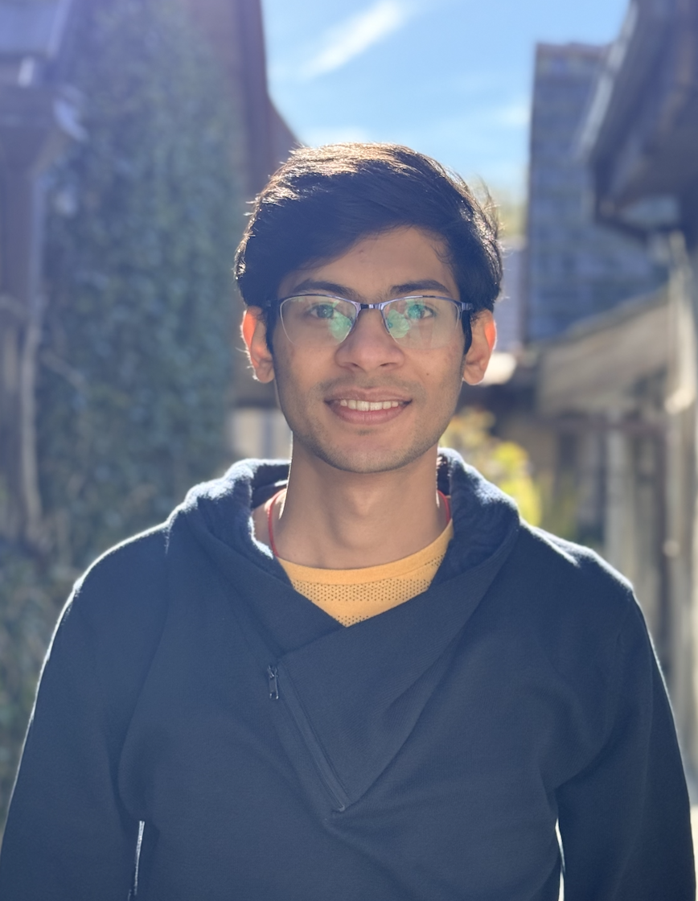

People
Principal Investigator

Current PhD Students

Xueying Bai
My current research focuses on continual learning with pre-trained language models. My research interests generally lie in continual learning, transfer learning, and generalization.
Research: Continual Learning, Machine Learning
Md. Saqib Hasan
My research focuses on improving the coding abilities of Small Language Models (parameter count < 100B). My current projects involve using synthetic data generation and post-training alignment to teach models how to utilize context and improve the security of generated code.
Research: Code Generation, Small Language Models, Synthetic Distillation, Post-training Alignment

Pegah Alipoormolabashi
I study the reliability of large language models, currently focusing on how they assess their confidence.
Research: LLM Reliability, Confidence

Biddut Sarker Bijoy
I focus on developing efficient, low-parameter agents for real-world applications, with a particular interest in enhancing the capabilities of large language models (LLMs) for complex reasoning and planning tasks. I am also interested in how LLMs can be refined to improve decision-making consistency and bridge the gap between language understanding and practical problem-solving.
Research: Efficient Reasoning, Decision-Making in LLMs, Lightweight AI Agents
Dikshya Mohanty
I work on human-centered NLP—the idea that natural language processing models can be improved by incorporating knowledge of who wrote the text. I’m also interested in how AI can be leveraged to enhance scientific discovery (AI for Science) and in understanding how media narratives shape public perception, particularly in the context of global crises (e.g., the Russia-Ukraine war).
Research: Human-Centered NLP, AI for Science, AI for Society

Syed Mostofa Monsur
I am working to improve the reasoning capabilities of LLMs to understand scientific text. I want to apply NLP/AI techniques to improve how these models interpret and reason over complex scientific literature. I am broadly interested in extending these techniques to assist scientific discoveries and support research innovation through AI models.
Research: LLM Reasoning, Implicit Reasoning, Scientific Discovery
Current Masters Students
